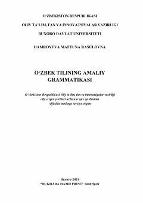

OTO‘zbek tilining amaliy grammatikasi bo‘yicha filologiya talabalari uchun mo‘ljallangan o‘quv qo‘llanma.
Ushbu o‘quv qo‘llanma oliy o‘quv yurtlari filologiya yo‘nalishi talabalari uchun mo‘ljallangan bo‘lib, o‘zbek tilining amaliy grammatikasi qonuniyatlarini tizimli ravishda yoritadi. Kitobda tilshunoslikning nazariy asoslari, fonetika va nutq madaniyati masalalari ilmiy-amaliy jihatdan tahlil qilingan.